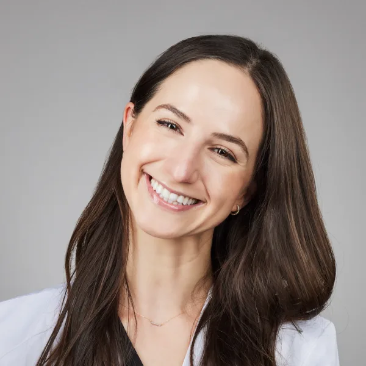

Lana Bubalo, DDS

"My mission is to provide high-quality, comprehensive dental care that stands the test of time. I love connecting with patients, forming relationships, and ensuring they feel comfortable in the dental chair and confident in their smiles."
- Lana Bubalo, DDS
Experience
Dr. Bubalo has a passion for learning and participating in continuing education courses to stay on top of the latest research and treatment guidelines. She completed her implant placement certification with the California Implant Institute in San Diego and was trained in moderate oral conscious sedation through DOCS education.
Dr. Bubalo is an active member of the American Dental Academy, the American Academy of Cosmetic Dentistry, and the Academy of General Dentistry.
Education
- Doctor of Dental Surgery
University of Southern California - Los Angeles, California - Undergraduate Studies
University of California at Santa Barbara - Santa Barbara, California
Outside the Office
In her free time, Dr. Bubalo loves to be active and enjoys biking, walking, and tennis with her husband, Mark. They love exploring the restaurant scene as well as entertaining at home with a good game night.